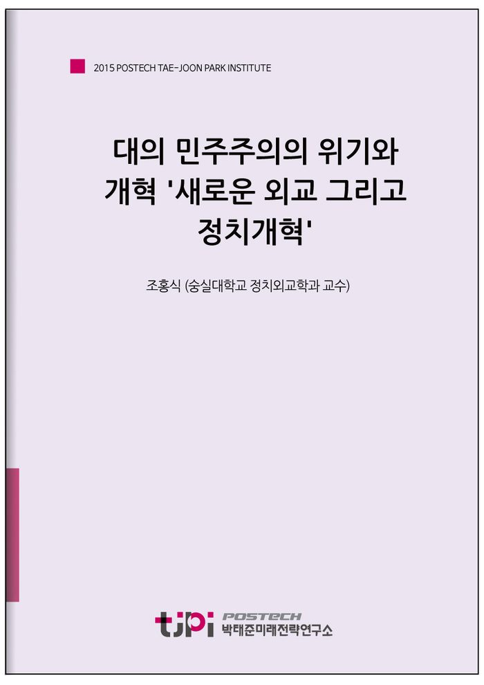

저자 조홍식 (숭실대학교 정치외교학과 교수)연재일 2015-10-17
요 약
우리 민주주의는 국민의 꿈을 실현할 수 있는 공동체의 희망으로 다시 태어나야만 한다. 여기서는 가장 간단하면서도 중요하다고 생각되는 세 가 지 개혁을 제시해 본다.
첫째는 대선에서 결선 투표제의 도입이다.
둘째, 국회의원 임기의 수를 제한해야 한다.
셋째, 국회의원과 정당이 가지는 특권과 지원을 대폭 축소하고 조정해야 한다.
한국의 민주주의는 경제발전과 함께 우리가 역사적으로 이룩한 매우 훌륭한 성과다. 이를 잘 살리고 발전시키는 것이 21세기 초반에 한국이라는 공동체에 주어진 가장 중요하고도 시급한 과제라고 할 수 있다. 현재 위기의 늪에 빠진 민주주의를 그대로 방치한다면 대한민국이라는 공동체는 해체의 위협을 경험하면서 예측할 수 없는 방향으로 폭발할 수 있다.
----------------------------------------------------------------
박태준미래전략연구소는 2015년 미래전략 연구 대상으로 선정한
‘10년 내 한국사회가 당면할 가장 중요한 이슈는 무엇이며, 어떻게 대응해야 하는가?’
라는 주제에 대해 다양한 분야에서 업적을 이룬 전문 지식인들의 생각을 들어보았습니다.
< 전문가 36인의 에세이를 엮어 '10년 후 한국사회'라는 책으로 발간되었습니다.
도서보기
목 차
조홍식
숭실대학교 정치외교학과 교수
파리정치대학교 정치학 박사. 현재 숭실대 정치외교학과 부교수, 숭실대 사회과학연구소 소장, 중앙일보 외교전문기자. 공저 『유럽의 민주주의: 새로운 도전과 과제』 『국익을 찾아서: 이론과 현실』 『아직도 민족주의인가. 우리시대 애국심의 지성사』 『국가의 품격』 『하나의 유럽: 유럽연합의 역사와 정책』, 저서 『유럽통합과 민족의 미래』 등..
내 용
[2015 전문가 에세이] 대의 민주주의의 위기와 개혁 '새로운 외교 그리고 정치개혁'
조홍식 (숭실대학교 정치외교학과 교수)

